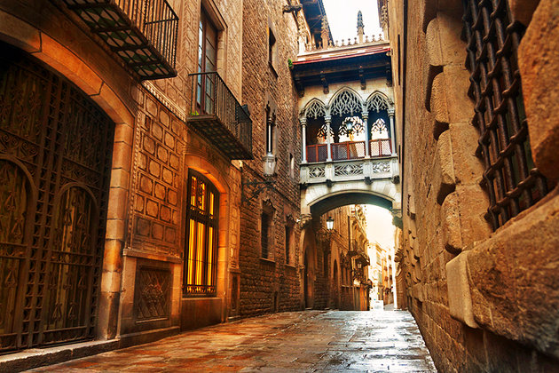
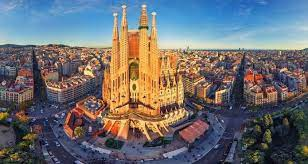
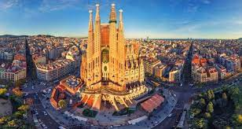

Barselona je poznata kao metropola modernizma. Grad u kojem je živeo i radio arhitekta Antoni Gaudi sadrži i njegova najreprezentativnija dela, koja godišnje privlače milione turista iz celog svijeta. Najpoznatije delo arhitekte i ujedno najposećeniji arhitektonski objekat u Španiji je katedrala Sagrada familija (Sveta porodica), koja je ostala nezavršena posle njegove smrti i još uvek se gradi. Predviđa se da će biti završena oko 2020. godine. Druga poznata dela arhitekte su kompleks Park Gvelj, gde je arhitekta i živeo poslednjih dvadeset godina svoga života, kuća Mila , poznatija pod imenom Pedrera i kuća Batljo . Osim dela arhitekte Gaudija, tu su još i drugi proizvodi katalonskog modernizma kao što je bolnica San Pau i Palata katalonske muzike , arhitekte Ljuisa Domeneka i Muntanera. Osim modernizma, u Barseloni se nalaze dela iz srednjovekovnog perioda, posebno ona iz gotike, a koja su prisutna u starom gradu. Po njima je i cela Gotska četvrt dobila ime. Njemu pripadaju katedrala Santa Eulalija, bazilika Santa Marija del Mar i crkva Santa Marija del Pi koja se nalazi na istoimenom trgu. Iz savremene arhitekture izdvaja se paviljon nemačkog arhitekte i dizajnera Ludviga Misa van der Roea, konstruisan 1929. godine u svrhu međunarodne izložbe, svetskog događaja čiji je domaćin te godine bila Barselona. Tu su još i Zadužbina Đoana Miroa i Paviljon Republike katalonskog arhitekte Đuzepa Ljuisa Serta i Muzej savremene umetnosti Barselone američkog arhitekte Ričarda Mejera.
 
